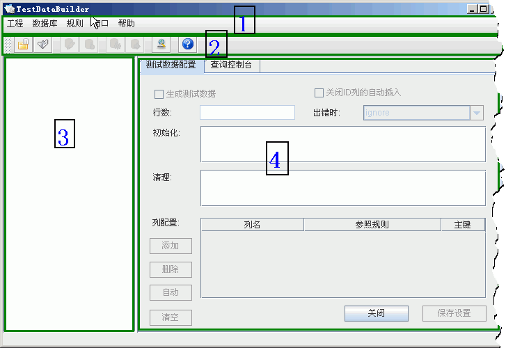

以下以SQLServer2000为例。
一:打开TestDataBuilder主程序,看到如下界面。

- 1区为菜单栏
- 2区为工具栏
- 3区为数据库结构浏览视图
- 4区为用户工具区
二:新建工程
- 点击菜单 工程->新建(或工具栏
 按钮) ,出现如下对话框:
按钮) ,出现如下对话框:

- 输入工程名称master,工程目录 D:\ , 点击确定,出现如下配置数据库连接的对话框:

- 默认的数据库是master(您最好建一个测试数据库,在master库中做测试毕竟是不太明智的),帐号为sa,密码也是sa,你需要根据你的情况作修改,修改完成后,点击测试,如果通过,请点击确定.(如果配置出错,或数据库原因连接不上会有错误提示)
- 点击确定后,左边的数据库结构视图应该已经有了树枝树叶,如下图:

三:配置规则
- 选中数据库节点,上例中是master,右键->自动配置所有,你会看到所有图标都变绿色了,master下面的所有表都将会生成测试数据,每个表会生成108条记录(这是默认值,可以在首选项里面重设该值,后面的章节会讲到)
四:生成测试数据
- 点击菜单 规则-> 生成测试数据 出现如下对话框:

- 点击开始按钮,开始生成数据

- 大功告成,您现在可以打开数据库查询分析器,查询自动生成的测试数据 ,此时你看到的数据,可能还不太今你满意,因为其中数据可能都是一些无意义的数据,如果你希望生成的数据更有意思,更接近真实,你需要自己动手编辑规则.请看这里.